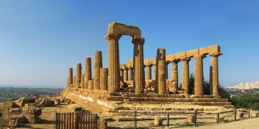

História da arquitetura
A história da arquitetura acompanhou o desenvolvimento da sociedade, uma vez que surgiu da
necessidade de organizar e adornar espaços sobretudo, os espaços urbanos.
Em outras palavras, a arquitetura é uma arte que surge da relação entre o homem e o espaço,
de modo que organiza os ambientes.
Conhecer a história da arquitetura é entender como vivíamos no passado, compreender mais a
fundo as diferentes culturas e conseguir prever o futuro, com base em fatos, tendências e
modos de vida.
Da pré-história às tecnologias contemporâneas; dos gregos e romanos às invenções que
prometem movimentar as cidades inteligentes...
Venha conosco nesse passeio e acompanhe a história desde o inicio: